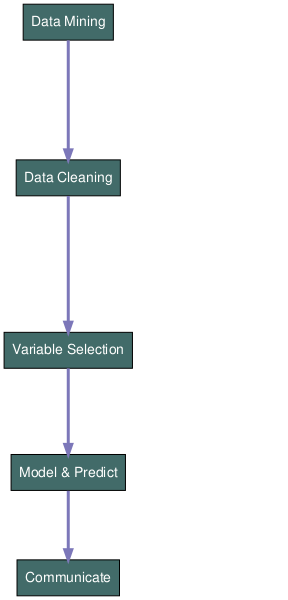
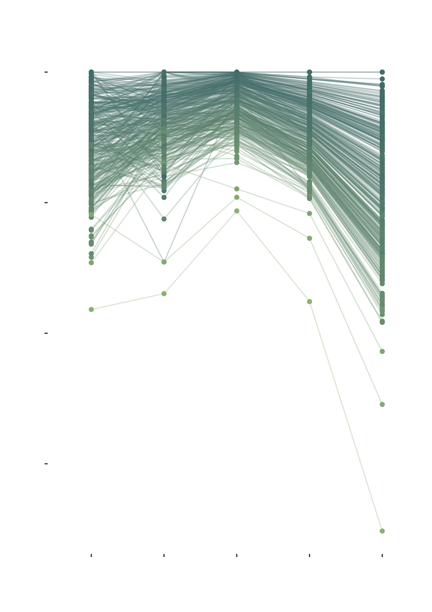
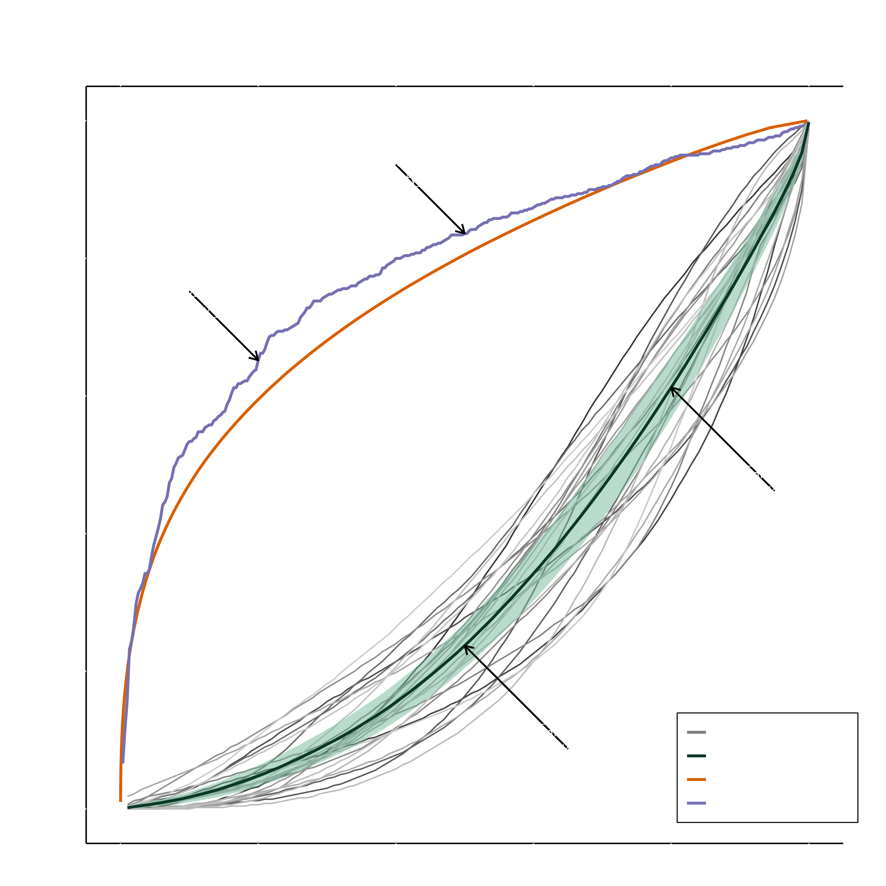
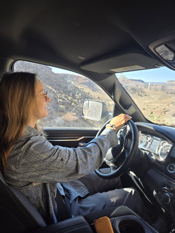
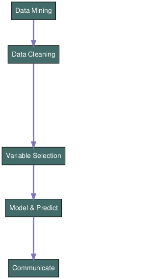
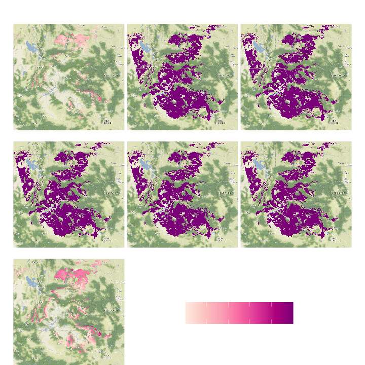
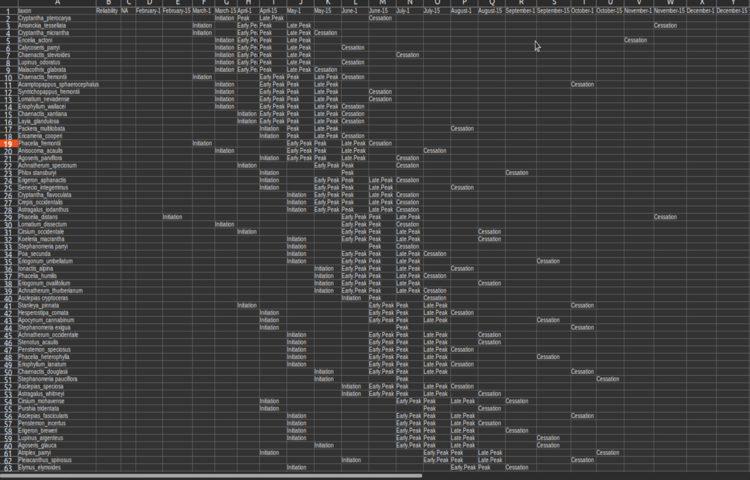
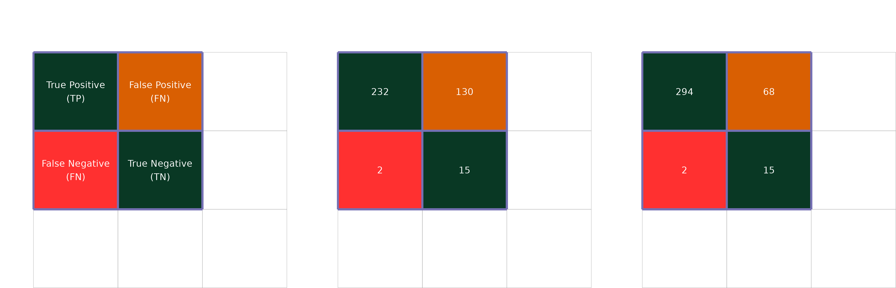
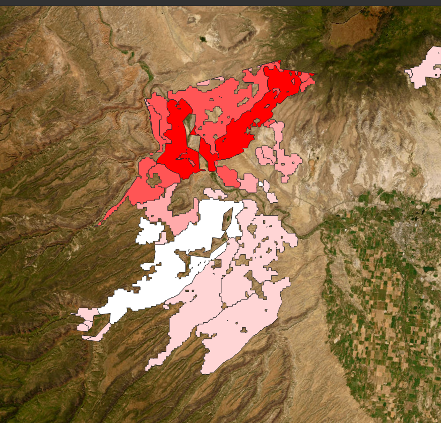
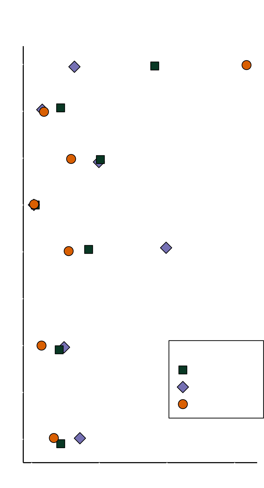

Modelling Natural History to Increase Native Seed Collection Efficiency - Space, Time, and Connectivity
Natural Areas Conference
Reed Clark Benkendorf
Senior Spatial Data Specialist & Senior Botanist
October 8, 2024
Background
- Remote Sensing, Citizen Science, Statistics, and Ecology
- research projects focus on theory and shoot for the moon
- West very large, lacking distribution data on most species
- What’s needed for seed collection?
- Better knowledge of Natural History
SPACE
“It is advisable to look from the tide pool to the stars and then back to the tide pool again.”
John Steinbeck & Ed Ricketts
Challenge
- Want: 20 collections per species per seed transfer zone
- Native species declining - wildfires, habitat degradation
- Many populations needed as drought, pests, etc. vary each year
- Occurrence data often biased against BLM
Solution
Model Call
\[\text{Species (Pres.|Abs.) ~}\\ \text{geology * topography * soils * vegetation * climate}\]- Species Distribution Modelling (SDM’s), ENM’s etc.
- Predict the probability of suitable habitat
- Modelled 353 taxa at 90m resolution
Workflow
Independent Variables
| Description | Source |
|---|---|
| Mean Annual Air Temp. (BIO1) | Chelsa |
| Temp. seasonality (BIO4) | Chelsa |
| Max Temp. of Warmest Month (BIO5) | Chelsa |
| Min Temp. of Coldest Month (BIO6) | Chelsa |
| Mean Temp. of Warmest Quarter (BIO10) | Chelsa |
| Mean Temp. of Coldest Quarter (BIO11) | Chelsa |
| Mean annual precip. (BIO12) | Chelsa |
| Precip. of Warmest Quarter (BIO18) | Chelsa |
| Precip. of Coldest Quarter (BIO19) | Chelsa |
| Mean Monthly vapour pressure deficit (vpd) | Chelsa |
| Heat accumulation of degree-days > 5C (gdd5) | Chelsa |
| First growing degree day > 5C (gdgfgd5) | Chelsa |
| Number of degree-days > 5C (ngd5) | Chelsa |
| Heat accumulation of degree-days > 10C (gdd10) | Chelsa |
| First growing degree day > 10C (gdgfgd10) | Chelsa |
| Number of Degree-days > 10C (ngd10) | Chelsa |
| Mean monthly near surface humidity (hurs) | Chelsa |
| Number of Days with Snow Cover(scd) | Chelsa |
| Annual Snow Water Equivalent (swe) | Chelsa |
| Percent Herbaceous Vegetation | EarthEnv |
| Percent Shrub Cover | EarthEnv |
| Percent Tree Cover | EarthEnv |
| Soil Depth to Bedrock (R Horizon) | SoilGrids |
| Soil organic carbon (Tonnes / ha) | SoilGrids |
| Soil Surface (0-5 cm) pH in H2O | SoilGrids |
| Soil 30-60 cm pH in H2O | SoilGrids |
| Soil Surface (0-5 cm) % clay | SoilGrids |
| Soil 5-15 cm % clay | SoilGrids |
| Soil Surface (0-5 cm) % silt | SoilGrids |
| Soil 5-15 cm % silt | SoilGrids |
| Soil 15-30 cm % silt | SoilGrids |
| Soil Surface (0-5 cm) % sand | SoilGrids |
| Soil 5-15 cm % sand | SoilGrids |
| Soil 15-30 cm % sand | SoilGrids |
| Soil Surface (0-5 cm) coarse fragments | SoilGrids |
| Soil (30-60 cm) coarse fragments | SoilGrids |
| Soil Salinity | SoilGrids |
| Elevation | MERIT - DEM |
| Slope | Geomorpho90 |
| Aspect | Geomorpho90 |
| Topographic Position Index | Geomorpho90 |
| Compound Topographic Index | terra |
| Topographic Roughness Index | terra |
| Human Influence Index | NASA Earth Data |
Dependent Variables
| Source | No. Records |
|---|---|
| Herbaria | 245,048 |
| iNaturalist | 171,981 |
| AIM (BLM) | 195,544 |
| VegBank | 55,124 |
| FIA (USFS) | 1,521 |
Implementation
- Crew Leads receive output raster data (two formats)
- Masked to >70% prob. of suitable habitat
- Raw probability predictions
- Also receive raw training presences
- Visually review data while preparing hitches

Results


TIME
“The two most powerful warriors are time and patience”
Leo Tolstoy
Challenge
- Crews spend 15-25% of work driving
- Leads often overwhelmed with number (gen. 40-80) of target species
- Finite windows for scouting and collecting
- Fruit develops simultaneously

Solution
Model Call
\[\text{GAM(Flowering (0|1) ~} \text{ DOY *}\\ \text{GDD * VPD * BIO10 * BIO14 * Soil Bulk Density * CTI * } \\ \text{corr. = corARMA(~ 1|year) * corExp(~ Lat.|Long.))} \]- Generalized Additive Models
- describe the onset, shape, and cessation of a phenophase via wiggles
- Modelled ca. 270 species at 250m resolution
Workflow
Independent Variables
| Description | Source |
|---|---|
| Mean Temp. of Warmest Quarter (BIO10) | Chelsa |
| Precipitation of driest month (BIO14) | Chelsa |
| Mean monthly vapour pressure deficit (vpd) | Chelsa |
| Heat accumulation of degree-days > 5C (gdd5) | Chelsa |
| First growing degree day > 5C (gdgfgd5) | Chelsa |
| Number of degree-days > 5C (ngd5) | Chelsa |
| Heat accumulation of degree-days > 10C (gdd10) | Chelsa |
| First growing degree day > 10C (gdgfgd10) | Chelsa |
| Number of Degree-days > 10C (ngd10) | Chelsa |
| Soil Bulk Density | SoilGrids |
| Compound Topographic Index | terra |
Dependent Variables
| Source | No. Records |
|---|---|
| Herbaria | 64,529 |
Implementation
- Internally, GAMs are predicted into space
- These are subset to initiation and end dates
- Values are extracted from relevant layers for a spreadsheet


Results

- “all models are wrong, some are useful” how do you want to be wrong?
- Few absence records collected; highly un-balanced data set
CONNECTIVITY
“In nature we never see anything isolated, but everything in connection with something else which is before it, beside it, under it and over it.”
Johann Wolfgang von Goethe
Challenge
- Species Distribution Models only identify areas with theoretically suitable habitat
- Do not account for migration
- Modeled habitat != occupied habitat
Solution
- Reprocess the output of SDM’s to identify clusters of suitable habitat
- Identify populated patches
- Rank the connections and classify distance from populated to un-populated patches
Implementation
- Crew Leads receive output vector data of patch ranks
- higher priority patches darker colors
- higher priority patches darker colors
- Visually review data while preparing hitches

Results
- Current hydrologic basins data set is to coarse
- 400% more pops found in R1 than expected by the number of them
- 74% more pops found R1 then expected by area alone

ACKNOWLEDGEMENTS
The Bureau of Land Management
Colorado Plateau Native Plant Program
Great Basin Native Plant Program
California Native Plant Program
Mojave Native Plant Program
Chris Woolridge, Kristy Snyder, Peggy Olwell
CONTACT